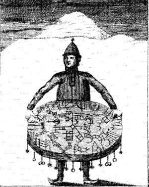
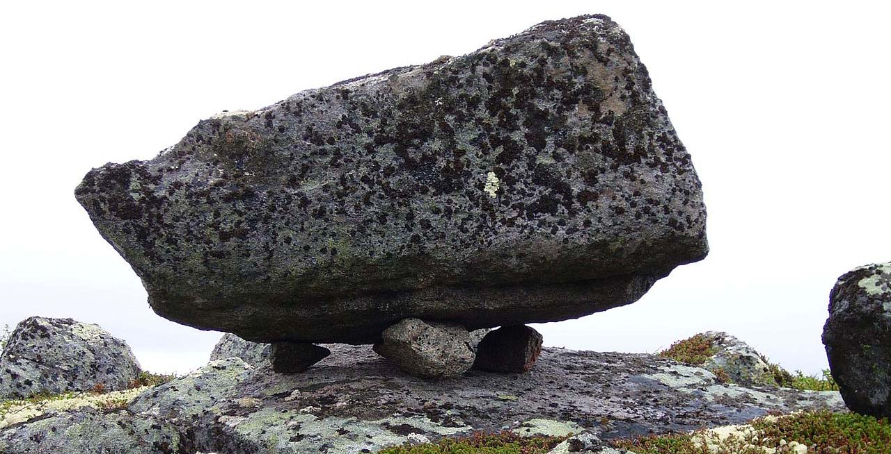

Du Chamanisme au Christioannisme
Religion traditionnelle
Dans l’ancienne religion, le peuple Sami était animiste c'est-à-dire que pour le peuple, la montagne, les ruisseaux et les rochers avaient une âme. Le soleil, la lune et les autres éléments naturels (vent, tonnerre, etc…) étaient aussi considérés comme divins. Ensuite, dans leur religion traditionnelle le monde était divisé en trois parties: le monde céleste, le monde souterrain et le monde terrestre.
Les Dieux étaient présents sur ces trois mondes. Ils faisaient des offrandes à ces Dieux dans les Seidi.Dans la langue Same, le Seidi est un lieu sacré où ils pratiquaient des sacrifices. Souvent, ces endroits sont des rochers inhabituels : plus grands ou d’une forme particulière par exemple.Ainsi, la religion des Saami relevait essentiellement du chamanisme. Le chaman, dénommé noaidi (same du nord) ou nåejtie (same du sud) rentrait en transe grâce au tambour et du joik pour rentrer en communication avec les Dieux dans le monde du saivo un lieu de rencontre avec les dieux où ils échangeaient sur le destin des membres de la communauté.
Changement dans la religion Sami
À partir des XVIe et XVIIe siècles, la religion et la vie des Samis sont perturbées par la volonté de l'État de contrôler le territoire et ses habitants. Des procédures de christianisation ont été mises en place, les Samis ont été colonisés et ont dû faire face à la sédentarisation. En effet, des missionnaires arrivèrent en Laponie avec pour but de christianiser le peuple sami. Les tambours de Chaman furent confisqués, brûlés et le joik interdit. Les lieux saints étaient profanés. Certains tambours ont néanmoins été cachés ou enfouis. Ce fut une période très difficile pour les sami Ils avaient interdiction de pratiquer leur ancienne religion. Certains ont fui vers les montagnes. La répression s'est accompagnée de peines sévères, d'amendes, d'emprisonnement et de la peine de mort. Ce sont des bouleversements dramatiques dans la vie sociale et l'organisation des Samis.
Religion aujourd’hui toujours très présente
Les Samis de nos jours sont tout aussi chrétiens que le reste de la population Norvégienne, Suédois, Finlandais ou Russes. Cependant, les fondements d'anciennes croyances existent toujours dans leur pratique religieuse. Le joik est à nouveau joué dans le cadre d'événements culturels et musicaux notamment dans les églises. On fabrique à nouveau des tambours, selon les anciens modèles. Ils sont devenu un symbole fort de la culture sami. Pour les samis, le ciel est peuplé d’esprits, une croyance en principe incompatible avec le protestantisme auquel la grande majorité de la population adhère. Mais les religions traditionnelles ne sont pas les seules à être pratiquées. Le christianisme est désormais la religion officielle du peuple sami, mais le chamanisme est toujours présent sous différentes formes dans la société sami.
exemple d’un lieu de culte qui a été identifié :
Siedi près du village de Tumanny